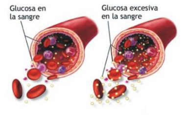
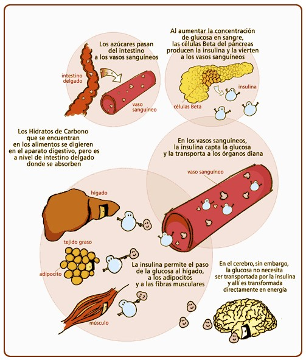

La prueba A1C mide su nivel promedio de glucosa en la sangre durante los últimos 2 o 3 meses.
Las ventajas de recibir un diagnóstico de esta manera es que no tiene que ayunar ni beber nada.

Se diagnostica diabetes cuando: A1C = 6.5%
Glucosa plasmática en ayunas
Esta prueba mide su nivel de glucosa en la sangre cuando está en ayunas.
Ayunar significa no comer ni beber nada (excepto agua) por lo menos 8 horas antes del examen.

Se diagnostica diabetes cuando: Glucosa plasmática en ayunas = 126 mg/dl
Prueba de tolerancia a la glucosa oral
Esta es una prueba de dos horas que mide su nivel de glucosa
en la sangre antes de beber una bebida dulce especial y 2 horas después de tomarla.
Se diagnostica diabetes cuando: Glucosa en la sangre a las 2 horas = 200
Prueba aleatoria (o casual) de glucosa plasmática
Esta prueba es un análisis de sangre en cualquier momento
del día cuando tiene síntomas de diabetes severa.
Se diagnostica diabetes cuando: Glucosa en la sangre = 200 mg/dl
¿Cuáles son los niveles deseados?
El nivel deseado de glucosa en la sangre varía de persona a persona, según:
Tipo de diabetes
Tiempo de evolución de la enfermedad
Edad/expectativa de vida
Trastornos paralelos a la enfermedad cardiovascular conocida
Hipoglucemia asintomática
Usted necesita controlarse periódicamente
Medirse la glucosa en la sangre es la principal forma para asegurar el control.
Esta medición le informa de su nivel de glucosa en la sangre. Es muy importante anotar los resultados.